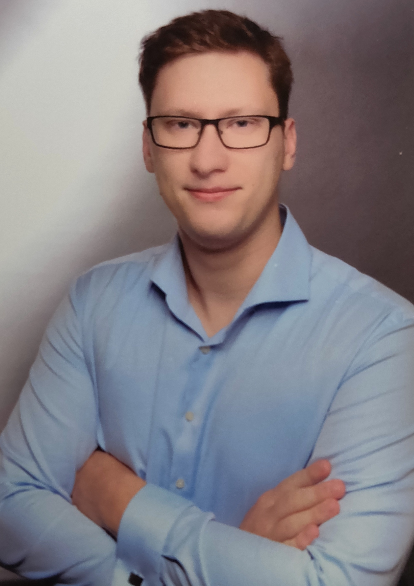

Hello, I'm Anton
Fullstack Developer +
Fullstack Developer +
IoT Enthusiast
My insatiable curiosity fuels exploration in both frontend and backend development, evident in my dedication to continuous learning and hands-on projects..

About me
I'm Anton Vorobey
I'm a Fullstack Developer with a passion for IoT. I'm a graduate of the University of Toronto's Fullstack Web Development Bootcamp, where I honed my skills in HTML, CSS, JavaScript, Node.js, Express.js, and React.js. I also have a background in IoT, having completed a Bachelor's degree in Electrical Engineering from the University of Toronto. I'm excited to leverage my skills in both fields to create innovative solutions that drive positive change.